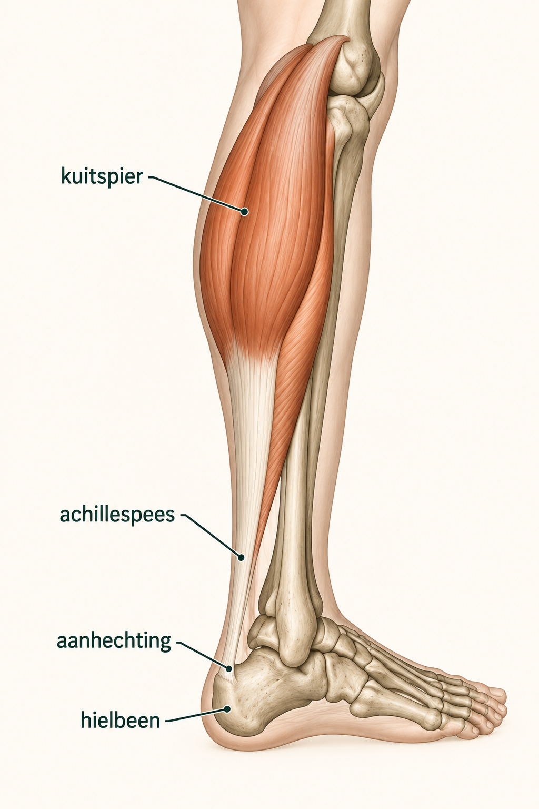

Wat zijn achillespeesklachten?
De achillespees verbindt de kuitspieren met het hielbeen. De pees krijgt veel kracht te verwerken bij lopen, traplopen, springen, sprinten en hardlopen. Klachten ontstaan vaak wanneer de belasting en belastbaarheid tijdelijk niet bij elkaar passen, maar de oorzaak is niet altijd alleen "overbelasting".
Bij achillespeesklachten wordt onderscheid gemaakt tussen klachten in het middendeel van de pees, klachten bij de aanhechting op het hielbeen en klachten rond de peesomhulling. Ook kunnen druk of wrijving van de schoen, slijmbeursirritatie, haglundse exostose, achterste enkelinklemming (posterieur enkelimpingement) of andere oorzaken van pijn rond de hiel een ander spoor vormen.
De medische beoordeling gaat daarom niet alleen over waar het pijn doet, maar ook over duur, opbouw, sport, schoenen, eerdere peesklachten, medicatie, algemene gezondheid en wat iemand weer wil kunnen doen.

Welke klachten kunnen bij de achillespees ontstaan?
Klachten kunnen bestaan uit opstartpijn, ochtendstijfheid, pijn bij traplopen, hardlopen, springen, sprinten, heuveltraining of na een trainingswissel. Soms is er verdikking, lokale gevoeligheid, zwelling of pijn bij knijpen in de pees. Bij aanhechtingsklachten kan druk of wrijving van de schoen, of pijn precies op de achterzijde van de hiel, meer opvallen.
Sportbelasting speelt vaak mee: snelle toename van kilometers, heuvels, tempowerk, sprinten, springen, andere ondergrond, nieuwe schoenen of terugkeer na rust. Dat betekent niet dat iemand iets "fout" heeft gedaan; het helpt wel om de belasting en herstelruimte te begrijpen.
Diabetes, ontstekingsziekten, eerdere peesklachten, bepaalde antibiotica zoals fluoroquinolonen, gebruik van corticosteroïden of eerdere injecties kunnen in de beoordeling worden meegewogen. Deze factoren betekenen niet automatisch dat ze de oorzaak zijn.
Waarom de locatie van pijn belangrijk is
De plaats van de pijn helpt om verschillende mogelijke oorzaken van elkaar te onderscheiden. Pijn in het middendeel van de pees past bij een ander klachtenpatroon dan pijn bij de aanhechting op het hielbeen of pijn in het weefsel rond de pees.
Midportion achilles tendinopathie betekent klachten in het middendeel van de pees, meestal enkele centimeters boven de aanhechting. De pees kan daar dikker en gevoelig zijn. Vaak is er stijfheid bij de eerste stappen en neemt de pijn toe wanneer de sportbelasting wordt uitgebreid.
Insertie-achillesklachten zitten bij de aanhechting op het hielbeen. Daar kunnen ook verkalking, botaanwas of irritatie van de slijmbeurs meespelen. Druk of wrijving van de schoen kan de klachten daar versterken.
Paratenon- of peesomhulselklachten geven soms pijn en gevoeligheid over een groter gebied rond de pees, met wrijving, warmte of zwelling langs de pees. Dat is iets anders dan alleen een verdikte pees.
Wat kan het ook zijn?
Bij pijn achter op de hiel kan een haglundse exostose een rol spelen. Daarbij is er extra bot aan de achterzijde van het hielbeen. De slijmbeurs tussen het hielbeen en de achillespees kan daardoor geïrriteerd raken, zeker door druk of wrijving van schoenen. Dat geeft meestal pijn achter op de hiel. Dit is iets anders dan achillespeesklachten in het middendeel van de pees, al kunnen klachten bij de aanhechting en slijmbeursklachten wel samengaan.
Zit de pijn dieper achter in de enkel, vooral bij het strekken van de voet, afzetten, dansen, voetballen of springen, dan kan er sprake zijn van posterieur enkelimpingement. Een os trigonum kan daarbij een rol spelen. Ook de pees die de grote teen buigt, kan op die plek geïrriteerd raken. Dat wordt ook wel een FHL-peesklacht genoemd en kan samengaan met pijn bij het bewegen van de grote teen.
Pijn onder de hiel past weer bij een ander klachtenpatroon. Hielpijn is een verzamelnaam en zegt op zichzelf nog niet waar de pijn vandaan komt. Onder de hiel kunnen bijvoorbeeld peesplaatklachten, hielspoor, irritatie van het vetkussen, zenuwpijn of soms stressletsel een rol spelen.
Soms komt pijn in dit gebied niet uit de voet zelf, maar uit de kuit of door een ontstekingsreactie. De verdere beoordeling hangt daarom af van de precieze plek van de pijn, het ontstaan van de klachten en de bevindingen bij onderzoek.
Midportion tendinopathie
Pijn en verdikking enkele centimeters boven de hiel, vaak belastingsafhankelijk.
Insertieklachten
Pijn bij het hielbeen, soms door druk van de schoen, kalk, botaanwas of slijmbeursirritatie.
Onderzoek en beeldvorming
Het onderzoek begint met het bespreken van de klachten: waar zit de pijn, hoe lang bestaat die, hoe zijn de klachten begonnen, welke sport of belasting lokt pijn uit, is er opstartpijn, verdikking, druk van de schoen, een eerdere peesklacht, medicatie, diabetes, een ontstekingsziekte of een recente trainingsverandering?
Bij het lichamelijk onderzoek wordt gekeken naar de pijnlocatie, verdikking, warmte, zwelling, kracht, afzetten, single heel raise, beweeglijkheid van enkel en voet, kuitlengte, vergelijking links-rechts. Ook de achterzijde van de enkel en hiel worden onderscheiden van de pees zelf.
In het artikel over de kuitspier en voetpijn leg ik meer uit over kuitlengte, de gastrocnemius en de manier waarop de kuitspieren de enkel en achillespees belasten.
Als het verhaal en lichamelijk onderzoek daar aanleiding toe geven, kan aanvullend onderzoek helpen om de pees en de omgeving beter in beeld te brengen. Een echo kan informatie geven over peesverdikking, de peesstructuur of vocht rond de pees. Een MRI kan nuttig zijn bij onduidelijkheid, langdurige klachten, aanhechtingsproblemen of operatieplanning. Röntgenfoto's kunnen bij aanhechtingsklachten, een haglundse exostose, botaanwas of kalk rond de peesaanhechting aanvullende informatie geven.
Behandeling
Bij geleidelijk ontstane achillespeesklachten is niet-operatieve zorg vaak de eerste stap. Het doel is niet alleen "rust", maar vooral het vinden van een belastingsniveau waarop de pees rustiger wordt en daarna geleidelijk sterker belast kan worden. De basis bestaat uit uitleg, het aanpassen van de belasting en gerichte krachtoefeningen voor de kuit en achillespees. Daarvoor is vaak een periode van minimaal twaalf weken nodig.
Pas tijdelijk sprinten, springen, heuvels, tempo, ondergrond of trainingsvolume aan.
Fysiotherapie kan werken met kuitkracht, excentrische oefeningen of heavy slow resistance.
Bij pijn aan de aanhechting zijn niet alle oefeningen geschikt. Oefeningen waarbij de hiel diep zakt, worden daarom soms aangepast.
Schoenadvies, hielverhoging, herstelruimte en terugkeer naar sport kunnen worden afgestemd.
Bij aanhoudende peesklachten na ongeveer drie maanden kan shockwave worden besproken als uitleg, belasting aanpassen en oefentherapie onvoldoende helpen. Het effect verschilt per persoon.
Een nachtspalk kan soms worden geprobeerd, maar de meerwaarde is onzeker. Dry needling is geen standaardbehandeling voor achillespeesklachten.
Pijnstilling of ontstekingsremmende medicatie hoort via de eigen huisarts of behandelaar te worden afgestemd. Ik geef op deze website geen doseringen of persoonlijk medicatieadvies. Injecties zijn geen standaardoplossing. Vooral corticosteroïdinjecties rond de achillespees vragen terughoudendheid vanwege mogelijke risico's. PRP is een andere vorm van injectiebehandeling. Het is niet duidelijk genoeg aangetoond dat PRP helpt of beter werkt dan andere behandelingen. Het wordt daarom alleen in geselecteerde situaties besproken.
Wanneer komt een operatie in beeld?
Een operatie komt meestal pas in beeld bij langdurige klachten die het dagelijks leven, werk of sport blijven beperken, ondanks minimaal zes maanden actieve niet-operatieve behandeling. Het gaat daarbij om een geselecteerde groep patiënten. De mogelijke winst, andere behandelopties en risico's worden samen met de patiënt besproken.
Er is geen standaardoperatie. De ingreep hangt af van de plek en oorzaak van de klachten. Bij problemen in het middendeel van de pees kan bijvoorbeeld ziek of verkleefd peesweefsel worden behandeld. Bij klachten rond de aanhechting kan de operatie zich richten op de slijmbeurs, een haglundse exostose, botaanwas, kalk of de peesaanhechting zelf. Bij een ernstige beschadiging van de pees kan in geselecteerde situaties een aanvullende peesreconstructie of FHL-transfer worden besproken. Dat is geen standaardbehandeling en de onderbouwing daarvoor is beperkt.
Een operatie kan complicaties geven, zoals wondproblemen, infectie, gevoelsverandering, stijfheid, restpijn of langdurig herstel. De risico's en de kans op herstel hangen onder andere af van de peeskwaliteit, de gezondheid en het type ingreep.
Wat bespreek je tijdens een consult?
Noteer waar de pijn zit: midden in de pees, bij de aanhechting, achter op de hiel of diep achter in de enkel. Beschrijf hoe de klachten zijn begonnen, hoe sportbelasting is opgebouwd, welke schoenen worden gebruikt, of er ochtendstijfheid is, en welke oefeningen, rustperiodes of behandelingen al geprobeerd zijn.
Neem informatie mee over eerdere peesklachten, injecties, antibiotica zoals fluoroquinolonen, corticosteroïden, diabetes, ontstekingsziekten, rookstatus, medicatie en beschikbare echo-, MRI- of röntgenverslagen. Bij sporters helpt het om trainingsbelasting en doelen concreet te maken.
Waar kan je terecht?
Bij nieuwe of acute klachten is de huisarts of huisartsenpost vaak het eerste aanspreekpunt. Bij oefenopbouw, sporthervatting, kracht, mobiliteit en belasting kan fysiotherapie een belangrijke rol spelen.
Als specialistische beoordeling passend is, kan de verwijzer gericht naar mij verwijzen via de gebruikelijke zorgkanalen. Bij een verwijzing op mijn naam voer ik de beoordeling in principe zelf uit. De wachttijd kan daardoor soms langer zijn. Voor afspraken, planning, uitslagen en praktische ziekenhuisinformatie zijn de officiële ETZ-kanalen leidend.
Zijn achillespeesklachten al elders vastgesteld of beoordeeld en is er behoefte aan een tweede mening, dan kan de verwijzer daarvoor ook gericht naar mij verwijzen. Ik beoordeel de situatie opnieuw; een tweede mening betekent niet automatisch dat de eerdere beoordeling of behandelrichting verandert.
Veelgestelde vragen
Wat zijn achillespeesklachten?
Achillespeesklachten zijn klachten in of rond de pees tussen kuitspieren en hielbeen. De pijn kan in het middendeel van de pees zitten, bij de aanhechting op het hielbeen of rond het peesomhulsel.
Wat is het verschil tussen middenpees en aanhechtingsklachten?
Middenpeesklachten zitten meestal enkele centimeters boven de hiel. Aanhechtingsklachten zitten op of vlak bij het hielbeen en kunnen samengaan met botaanwas, slijmbeursirritatie of schoendruk.
Ik heb verkalking in mijn achillespees. Wat betekent dat?
Verkalking of botaanwas bij de aanhechting van de achillespees kan samengaan met aanhechtingsklachten. Een verkalking op een röntgenfoto is niet automatisch de oorzaak van de pijn. De plek van de klachten, het lichamelijk onderzoek en het verdere verhaal bepalen hoe dit wordt beoordeeld.
Wat kan op achillespeesklachten lijken?
Haglund- of retrocalcaneaire slijmbeursklachten, posterieur enkelimpingement, os trigonum, FHL-peesklachten, hielpijn, peesplaatklachten, stressletsel, zenuwklachten en kuitproblemen kunnen erop lijken of ermee samengaan.
Is echo of MRI altijd nodig?
Niet altijd. Het verhaal en lichamelijk onderzoek geven vaak veel richting. Echo of MRI kan helpen bij twijfel, duidelijke verdikking, langdurige klachten of planning. Röntgenfoto kan bij aanhechtingsklachten of Haglund-vragen nuttig zijn.
Welke behandeling wordt meestal eerst besproken?
Vaak gaat het eerst om belasting sturen, fysiotherapie, progressieve kuitkracht, excentrische oefeningen of heavy slow resistance, schoenadvies en geleidelijke opbouw. Bij aanhechtingsklachten moeten oefeningen soms worden aangepast.
Zijn injecties rond de achillespees standaard?
Nee. Injecties zijn geen standaardoplossing. Vooral corticosteroïden rond de achillespees vragen terughoudendheid vanwege mogelijke risico's. Andere injecties worden alleen in geselecteerde situaties besproken zonder garantie op herstel.
Helpt PRP bij achillespeesklachten?
PRP is een injectiebehandeling met bloedplaatjes uit het eigen bloed. De Nederlandse richtlijn noemt PRP als een mogelijke optie in geselecteerde situaties, maar de onderzoeken geven geen duidelijk antwoord op de vraag of PRP helpt of beter werkt dan andere behandelingen. Het is daarom geen standaardbehandeling en geeft geen garantie op herstel.
Wanneer wordt een operatie besproken?
Operatie wordt alleen geselecteerd besproken bij langdurige beperkingen, duidelijke peesverandering, aanhechtingsproblemen, Haglund- of slijmbeurscontext of onvoldoende herstel ondanks passende niet-operatieve zorg. De richting verschilt per persoon.